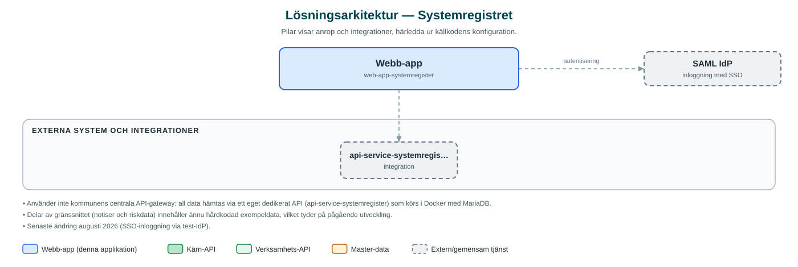

Systemregistret
Ett samlat register över kommunens IT-system med informationssäkerhetsklassning, GDPR-behandlingar, leverantörer och riskuppföljning.
Om applikationen
Systemregistret ger kommunen en samlad bild av alla IT-system som används i verksamheten. För varje system dokumenteras informationssäkerhetsklassning enligt K/R/T (konfidentialitet, riktighet, tillgänglighet), ansvariga, leverantörer och avtal samt systemets status, från utveckling till avveckling.
Tjänsten stödjer också det systematiska informationssäkerhetsarbetet: GDPR-behandlingar med rättslig grund och krav på konsekvensbedömning (DPIA), riskregister med uppföljning, kontinuitetsplanering och en särskild vy för AI-tillämpningar. En instrumentpanel och rapporter ger överblick, och notiser uppmärksammar exempelvis avtal som löper ut eller backuper som inte verifierats.
Behörigheten styrs i tre nivåer, där administratörer har full tillgång, redaktörer kan redigera system, leverantörer och klassningar, och övriga har läsbehörighet. Tjänsten är under aktiv utveckling och vissa delar bygger ännu på exempeldata.
Det här stödjer applikationen
- Systemförteckning – Registrera och följ upp kommunens IT-system med leverantörer, avtal och livscykelstatus.
- Informationsklassning – Klassa system enligt K/R/T och dokumentera bedömningar och genomförda analyser.
- GDPR-behandlingar – Förteckning över personuppgiftsbehandlingar med rättslig grund och DPIA-krav.
- Risker och kontinuitet – Dokumentera och följ upp risker samt kontinuitetsplanering kopplad till systemen.
- AI-tillämpningar och rapporter – Särskild översikt över AI-tillämpningar samt instrumentpanel, rapporter och notiser.
Teknisk dokumentation
Nedan beskrivs hur applikationen är uppbyggd, vilka API:er den använder och vad som krävs för att driftsätta den. Informationen är härledd ur källkoden och dess konfiguration på GitHub.
Arkitektur

Applikationen består av en webbaserad frontend (Next.js 16, React 19, sk-web-gui) och en backend (Node.js/Express (BFF) med TypeScript) som utvecklas i samma kodbas. Inloggning: SAML (SSO) med behörighetsstyrning via AD-grupper (admin/redaktör/läsare). Övriga integrationer som förekommer i koden: api-service-systemregister (eget dedikerat API i separat repo, Java/Spring Boot + MariaDB), SAML IdP (kommunens IdP i drift, test-IdP lokalt).
Teknikstack
- Frontend: Next.js 16, React 19, sk-web-gui
- Backend: Node.js/Express (BFF) med TypeScript
- Test: Jest (backend), Cypress (frontend)
API-beroenden
Inga prenumerationer på kommunens API-plattform hittades i källkodens konfiguration.
Konfiguration och driftsättning
- Miljöfiler: .env (Docker/api-service), backend/.env.development.local, frontend/.env.local
- API_BASE_URL pekar mot det dedikerade api-service-systemregister
- SAML-nycklar och certifikat (SAML_ENTRY_SSO, SAML_IDP_PUBLIC_CERT m.fl.)
- AD-grupper per behörighetsnivå (ADMIN_GROUP, EDITOR_GROUP, VIEWER_GROUP)
- Miljövalidering via envalid i backend (validateEnv)
Noterbart ur källkoden
- Använder inte kommunens centrala API-gateway; all data hämtas via ett eget dedikerat API (api-service-systemregister) som körs i Docker med MariaDB.
- Delar av gränssnittet (notiser och riskdata) innehåller ännu hårdkodad exempeldata, vilket tyder på pågående utveckling.
- Senaste ändring augusti 2026 (SSO-inloggning via test-IdP).
Källkod
Källkoden är öppen och finns hos Sundsvalls kommun på GitHub. I källkodsförrådet finns även instruktioner för att klona, konfigurera och starta applikationen i egen miljö.